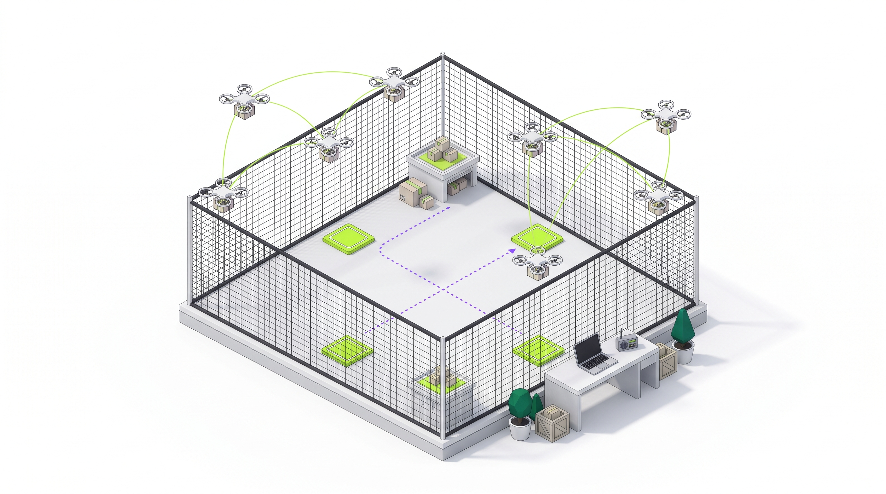

Browser simulator and AeroPACT (ROS 2, Gazebo, PX4 SITL), 4 baselines, 340 benchmark runs.
PACT nodes on companion computers talking over real mesh radios, with PX4 flying in simulation.
4 to 6 small quadcopters in a netted arena. We kill the hub and cut the radio during live missions.
Simulated fleets of 50+ drones; a campus or hospital parcel route with a partner, under DGCA drone rules.